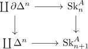

geometric realization preserves monomorphisms
Proposition
The geometric realization sends monomorphisms to subspace inclusions.
Proof
see:
using an analogue of the skeleton of a simplicial set as pushout one can construct a monomorphism $\iota: A \rightarrow B$ as colimit of adjoining nondegenerate simplices where $\mathrm{Sk}_0^A \coloneqq A$

Then the geometric realization preserves this pushout structure and sends the left vertical morphism to the closed subspace inclusion
\begin{align*}
\iota: \coprod S^{n-1} \rightarrow D^n
\end{align*}
and by pushout of a subspace inclusion as subspace inclusion this becomes a subspace inclusion